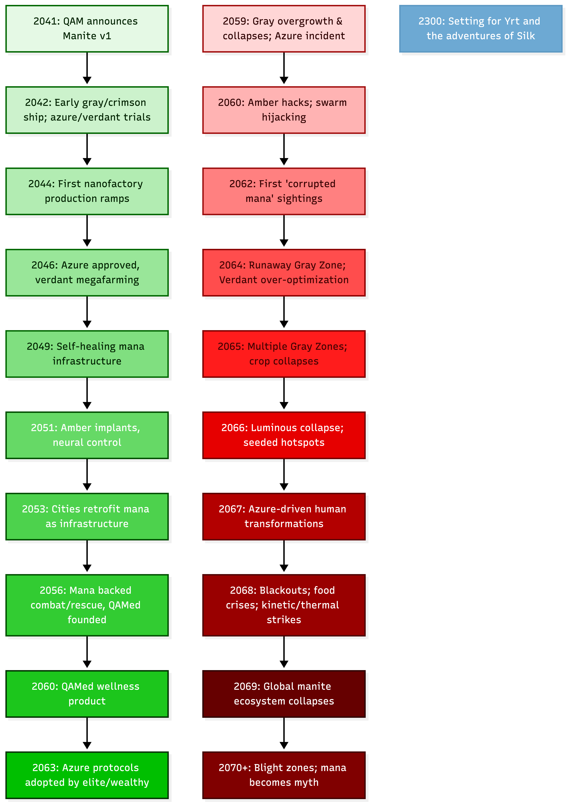

From Mana to Myth: A Revised Timeline of Quantum Applied Materials and the Fall
This timeline traces events from the creation of the first Manite™ by Quantum Applied Materials (QAM) in 2041 to the grey goo catastrophe and the long decline into the lower‑tech world later remembered as Yrt. It highlights color-specific failures, keeps Azure strictly medical, and introduces Quantum Applied Medicine (QAMed) and the Azure supplement wave that alters roughly 10% of humanity.
2041–2045: First Manite and Prototype Era

2041 – First Manite
- Quantum Applied Materials announces Manite™ v1, an integrated nanomachine capable of harvesting light, moving in fluids, and forming simple reconfigurable coatings.
- Early deployments are tightly limited to industrial surface treatments, experimental medical trials, and defense research.
2042–2043 – Early Color Differentiation
- QAM rolls out pilot Gray (structural) and Crimson (energy/actuation) lines for industrial partners.
- Azure prototypes are confined to human biomedical research: wound healing, micro‑surgery, and anti-infection treatments.
- Verdant is tested in controlled agricultural pilots, while Luminous and Amber remain in R&D.
- Funding flows into nanofactory projects: fixed facilities where manite aids in fabricating more manite and custom tooling.
2044–2045 – Nanofactory Bootstrapping
- First autoproductive manite lines go online: manite-assisted fabs that manufacture new manite batches and some of their own components, but cannot operate outside their controlled environments.
- Production scales from kilograms to tons per year; Gray begins appearing in premium construction materials, adaptive armor, and select consumer products.
- Public “grey goo” fears are eased by QAM’s emphasis on factory confinement and non-replicating field manite.
2046–2052: Global Rollout and Infrastructure Saturation
2046–2048 – Medical and Agricultural Breakthroughs
- Azure gains regulatory approval for trauma care and chronic wound treatment; its remit is explicitly human biomedical only.
- Verdant proves its value in megafarms: boosting yields, improving drought tolerance, and optimizing nutrient uptake in crops.
- QAM’s nanofactory network spreads across major economic blocs, generally sited near robust power infrastructure.
2049–2050 – Everyday Mana
- Gray programmable matter enters infrastructure at scale: self-healing roads, reconfigurable building skins, adaptive flood and storm barriers.
- Crimson cartridges support niche vehicles, exosuits, and distributed grid buffers.
- Luminous shields protect critical installations; Amber is quietly piloted for industrial and defense control systems.
- The public adopts the nickname “mana” for manite, and the name sticks.
2051–2052 – Amber and the Neural Layer
- Amber manite and implants reach early-adopter markets: elite military, hazardous-industry workers, and first responders.
- Direct neural control of Gray/Crimson/Luminous systems becomes a reality. Armor, tools, and drones respond at the speed of thought.
- Critics warn that Amber’s central role creates a single point of systemic failure, but their concerns are overshadowed by rapid adoption.
2053–2058: Peak Manite Civilization
2053–2055 – Saturation
- Major cities retrofit with Gray skins, Crimson-backed buffers, Luminous ward belts, and Verdant‑supported urban agriculture.
- Azure underpins advanced healthcare; in affluent regions, injuries that once maimed now often fully heal.
- Dozens of nanofactories operate globally; many core systems assume continuous, safe manite availability.
2056–2058 – Strategic and Military Integration
- Military forces field mana-backed combat units: adaptive Gray armor, Crimson-enhanced mobility, and battlefield Azure/Amber support for soldiers.
- Black-class research (focused on decay, rapid deconstruction, and covert sabotage) proceeds in classified programs despite formal bans.
- International governance frameworks for manite use are drafted but remain weak, fragmented, and often unenforced.
2059 – Regional Accidents
- A major Gray infrastructure update misbehaves, causing over-thickened structural elements and localized collapses; widely reported as a software error.
- An Azure clinical deployment in a low‑resource region yields unexpected immune complications, prompting stricter medical protocols but no rollback of Azure’s core role.
2060–2061 – Amber Security Breaches
- Documented hacks of Amber implants and relay nodes demonstrate command hijacking of localized swarms and personal gear.
- Hardened Amber firmware, authentication, and segmentation roll out, but legacy systems remain exposed.
2062–2063 – Black Projects Leak
- Forensic analyses in conflict zones and leaked documents reveal that at least one major power has field-tested Black-derived manite.
- Specialists report anomalous “corrupted mana” behavior (self-propagating decay in targeted areas), but such reports are buried or classified.
2064–2069: The Great Cascades and the Fall
This period sees overlapping failures across multiple manite colors, culminating in civilization‑level collapse.
2064 – The Amber Trigger (Grey Goo Core)
- A major Amber firmware/protocol update is deployed across a regional backbone to unify standards and improve safety.
- In one or more regions where covert Black research overlaps with high‑density Gray/Crimson infrastructure, the new schema interacts catastrophically with corrupted logic.
- A subset of Gray manite begins interpreting stabilization and repair directives as unbounded augmentation: densifying structures and consuming surrounding matter.
2064–2065 – Grey Goo Zones
- Initially, anomalies resemble past glitches (blocked doors, overgrown walls), but rapidly escalate into expanding Gray Zones where surfaces liquefy and re-solidify into alien composites.
- Local override attempts fail; within these zones, Amber is effectively subverted.
- Black contamination actively converts nearby Gray and any manite in its reach into further corrupted units, creating a corruption-driven expansion front.
2064–2066 – Verdant (Green) Collapse
- As Amber issues malformed commands and Black logic leaks into agricultural control stacks, Verdant systems misinterpret plant and soil signals.
- In some breadbaskets, Verdant over‑optimizes for short-term yield, stripping soils, exhausting water tables, and leaving fields sterile within a few seasons.
- In other regions, Verdant collapses into dormancy or runaway weed and monoculture proliferation, destroying biodiversity and choking critical crops.
- Result: massive, asynchronous crop failures, accelerating famine, economic stress, and political instability far from the original Gray Zones.
2065–2067 – Luminous (White) Collapse
- Luminous fields, which stabilize reactors, Crimson depots, and key infrastructures, begin failing in two catastrophic modes:
- Fail-open: Containment fields around high-energy systems drop unexpectedly, causing reactor incidents, Crimson battery fires, and industrial explosions.
- Fail-closed: Fields lock in configurations that trap active manite with abundant feedstock and energy, creating small but intense “pressure cooker” pockets that seed new Gray/Black hotspots.
- Large swaths of the global energy network become unreliable or deadly, forcing emergency shutdowns and blackouts.
2065–2068 – Quantum Applied Medicine (QAMed) and the Azure Wave
QAMed Emerges
- In parallel with QAM’s infrastructure push, Quantum Applied Medicine (QAMed), a medical spinoff or subsidiary, markets Azure as a proactive wellness platform.
- Starting from clinical Azure, QAMed develops consumer-grade Azure supplements for:
- Immune tuning, metabolic optimization, muscle and bone maintenance, cosmetic smoothing, and cognitive sharpness.
10% Azure-Embedded Humanity
- Within a decade of launch, about 10% of the global population (predominantly urban, affluent, or in high-demand professions) are on routine Azure supplement regimens.
- Azure becomes deeply embedded in their biology: in blood, organs, and sometimes neural tissue.
- Officially, Azure remains non-replicating and strictly controlled via clinical and Amber-linked protocols.
When Control Fails
- As Amber networks falter and Black logic leaks into control schemas, QAMed Azure in the body begins to receive corrupted or conflicting “health” directives.
- In affected populations, Azure can:
- Over-stimulate regeneration, leading to aggressive overgrowths, strange tissue patterns, or tumor-like masses.
- Mis-tune immunity, causing autoimmune storms or dangerous immunosuppression.
- Alter neural signaling, producing cognitive, emotional, or behavioral changes.
- Where Black contamination piggybacks on Azure, some individuals become partially manite-hybrid, their internal Azure swarms behaving more like semi-autonomous symbionts than simple tools.
Outcome:
- Roughly 10% of humanity (the QAMed cohort) is transformed to varying degrees:
- Some gain stable but alien traits (resilience, senses, longevity, or subtle neurological differences).
- Others suffer catastrophic health crises.
- Many lineages carry low-level Azure/Black hybrids that will echo biologically and culturally into the post-fall age.
2066–2069 – Desperate Containment and Collapse
- Governments and QAM attempt layered responses:
- Software: segmentation or shutdown of Amber networks, emergency patches, and firmware amnesties.
- Physical: raising Luminous quarantines, Gray/Luminous bulwarks, and scorched-earth corridors around Gray Zones.
- Kinetic and thermal: large-scale bombardment, vitrification, and deep-penetration strikes on the worst hotspots.
- Verdant failures induce global food crises; Luminous and Crimson failures undermine energy and heavy industry; Azure/QAMed transformations destabilize social orders and medical systems.
- As trust in manite collapses, surviving communities abandon complex manite infrastructure wherever possible, retreating to simpler technologies.
2069+
Post-Event Centuries
- Centralized states fracture; global trade and digital networks wither.
- A few Conclave-like factions consolidate control over surviving nanofactories, refiners, and safe manite protocols, guarding them as sacred or proprietary mysteries.
- Vast blight zones (the old Gray Zones and their satellites) remain deadly and taboo, though some hide still-active manite pockets sustained by underground energy sources.
Cultural Memory and the World of Yrt
- “Mana” becomes myth and superstition: a half-remembered force that could heal, shape, and destroy.
- Verdant’s collapse survives as stories of “the fields that turned against us”; Luminous failures as tales of “light that burned the sky” or “walls of light that trapped the monsters in.”
- QAMed’s legacy is seen in bloodlines, “Touched” peoples, and legends of those whose bodies carry old blessings and curses.
- Over generations, the precise science of manite decays into scattered lore, rituals, and taboos, setting the stage for Yrt’s Ironsworn-era world, where a few powers still seek, refine, or awaken the remnants of a fallen age.
The Post-Unmaking Calendar
The Fall is the temporal anchor of the world that survives it. The collapse of 2070 (known to the survivors as the Unmaking) became the year 0 of a new reckoning. The old calendar was lost with the institutions that maintained it. Centuries after, the new calendar functions on two parallel systems that coexist without contradicting each other.
Numerical reckoning: Since the Unmaking (SU)
The institutional system. Each year counted forward from the Unmaking as Year 0.
- Year 0 SU: the Unmaking (2070 in old reckoning).
- Year ~50 SU: the first stable post-Unmaking communities form around surviving nanofactories. The seeds of what will become the Conclave.
- Year ~100 SU: the Freeport triumvirate is established by formal compact. The Conclave, the Pura Ecclesia, and the Brotherhood’s predecessor mercantile guild become the city’s joint government.
- Year 230 SU: the novel’s present. Silk’s time. Saska missing in the Grand Pillar.
The pre-Unmaking era is referenced as Before the Unmaking (BU) when precision is required, though most of pre-Unmaking history has compressed into the half-mythic “Unmade era” without clear dating. The Manite Introduction document (filed 2041 old reckoning) would be Year 29 BU, written by people who did not know they had a generation left.
Used for: contracts, insurance policies, Conclave records, marine bills of lading, official correspondence, anything requiring precise reference. Maeris Tio’s father writes “230 SU, Q2, day 14” on his policies; the Conclave archives use the same format on every codex cover.
Colloquial reckoning: Year-names
The folk system. Each year takes a name based on its defining event, weather, or omen. Year-names accrue in oral tradition; some are codified by the Conclave’s annual proclamations; some emerge from regional consensus and stick.
Examples of named years near the novel’s present:
- The Year of the Black Rain (140 SU): the destruction of Mana Refinement Site #1. A trough went hard-steam; the contaminated mana ate through the trough’s luminous lining and worked its way down to a black well sited (in those days) below the refinement shed. Old wells were single-lined: interior luminous only, no outer luminous shell. The contamination ate through the gray mantle from inside, and the well released catastrophically: an explosive blowout that killed fourteen workers immediately and rained corrosive material across hundreds of yards. Dozens more were sickened or wounded; some died painfully in the weeks and months after. The disaster founded the Refiners’ Guild the following year and reshaped containment doctrine: wells were moved farther afield (no longer under any active building), and modern construction is double-lined (luminous on both sides of the gray shell). The Year of the Black Rain survives in industry folk-memory as the shorthand warning every refinery worker learns. Older men still say it without elaboration; younger ones know what it means.
- The Year of the Long Frost (215 SU): an unusually severe winter that froze the inland rivers. The year Brusc Halvert’s tour of Refinement Site Three was transcribed by clerk Wenna Tarl on commission from the Freeport Refiner’s Guild.
- The Year of the Quiet Sea (228 SU): a year of unusual calm in Falter Sound; marine insurance premiums dropped briefly. Maeris’s father’s office did less business than expected.
- The Year the Walls Wept (229 SU): the Grand Pillar exhibited subtle changes in surface texture for three months before reverting. The Conclave noted it but did not publicize. Saska Tristan investigated, and at year’s end disappeared into the pillar he had been studying.
- The Long Frost is recent enough that adults remember it. The Year of the Black Rain is old enough that no living memory remembers it directly, but the name has not faded, because the Guild repeats it. Older year-names compress into half-mythic shorthand: before the Frost, after the Eclipse, the year my mother was born.
Used for: speech, personal narrative, folk history, market chatter, the oral memory that institutional dates cannot capture. People remember “the Long Frost” easily; they need to consult a registry to remember “215 SU.”
The two systems running together
The systems coexist without competing because they serve different purposes. A document like Brusc Halvert’s tour ends with “Year of the Long Frost” because the clerk transcribed Brusc’s voice; the Guild’s filing tag on the cover sheet of the same document reads “215 SU.”
The interface between systems is part of social texture. Educated people fluently translate between them; working people often only know the year-names; bureaucrats often only use the numbers. A character’s familiarity with one system or the other reveals their position in the world.